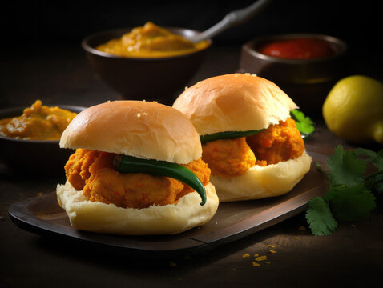

Vada Pav

Vada Pav, Mumbai's street food gem, features a spiced potato patty fried to perfection, nestled inside a soft pav. The potato filling,
seasoned with mustard seeds and aromatic spices, offers a flavorful kick. Encased in a crispy gram flour batter, it's often served with a trio of chutneys—garlic,
tamarind, and green creating a harmonious blend of textures and tastes.
This iconic Indian snack is a beloved on-the-go delight, celebrated for its affordability and delicious street-side charm.
Ingrediants
For the Potato Filling:
- 4 large potatoes, boiled and mashed
- 1 tablespoon oil
- 1 teaspoon mustard seeds
- 1 teaspoon cumin seeds
- 1/2 teaspoon turmeric powder
- 1/2 teaspoon red chili powder
- 1 tablespoon ginger-garlic paste
- Salt to taste
- Fresh coriander leaves, chopped
For frying:
Other Ingrediants:
- Pav (soft bread rolls)
- Green chutney
- Tamarind chutney
- Garlic chutney (optional)
- Thin slices of onion and tomato
- Fresh coriander leaves for garnish
Steps:
- Prepare the Potato Filling:
- Heat oil in a pan, add mustard seeds, cumin seeds, and let them splutter.
- Add ginger-garlic paste and sauté until fragrant.
- Add turmeric powder, red chili powder, mashed potatoes, salt, and chopped coriander. Mix well and cook for 2-3 minutes. Allow the filling to cool.
- Make the Gram Flour Batter:
- In a bowl, mix gram flour, rice flour, turmeric powder, red chili powder, and salt.
- Gradually add water to make a smooth batter. Add baking soda if using
- Shape and Dip the Potato Filling:
- Divide the potato mixture into small balls and flatten them to form patties.
- Heat oil in a pan for frying.
- Dip each potato patty in the gram flour batter, ensuring it's well-coated, and fry until golden brown and crispy. Drain excess oil on paper towels.
- Assemble the Vada Pav:
- Slit the pav horizontally without cutting all the way through.
- Spread garlic chutney (if using), green chutney, and tamarind chutney on the inner sides of the pav.
- Place a hot vada in the center and press gently.
- Optionally, add thin slices of onion and tomato.
- Garnish with fresh coriander leaves.
- Serve:
- Serve the vada pav hot with extra chutneys on the side.
Enjoy your homemade Vada Pav, a popular and flavorful street food snack!